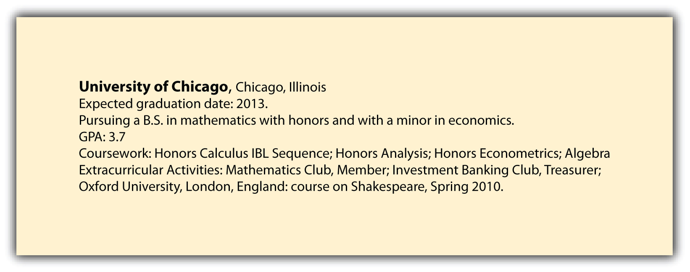
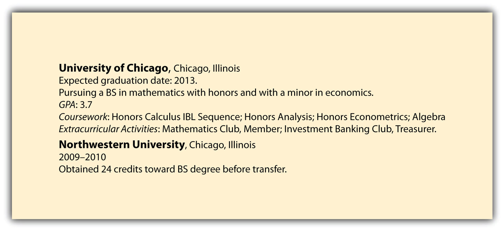

4.3 Education Section
Learning Objectives
- Learn how to present your education to position you for success with your résumé reader.
- Include vital information regarding your GPA, major and minor selection, and extracurricular activities so prospective employers can get a sense for your focus.
While you are in school, or up to one year after you graduate, your education section should appear before your experience section. Once you are a working professional, these two sections can and should be flipped.
Additional items in this section include the following:
- Expected graduation date: Listing the month or the season both work well here (e.g., Spring 2013 or May 2013).
- Relevant coursework: You may choose to list relevant coursework if it pertains to the position for which you are applying.
- Major and minor: You may choose to include both your major and your minor.
- GPA: You may include your overall GPA or you may decide to list the GPA of your major. It’s recommended that you not include your GPA if it is below 3.3. Certain industries are more concerned with GPA than others, including consulting, investment banking, and trading, which can require a 3.6 or 3.7 and above. It’s best to research each industry to better familiarize yourself with such requirements because this can vary by industry and by company.
- Extracurricular activities: Recruiters may be impressed to read that you were active in your college and that you belonged to targeted student clubs. If you held any leadership posts, that information should be included as well.
- Study abroad: If you have studied abroad, list that here. You should include the name of the university, the city and country, and the coursework.
Nontraditional college students (those who have significant work experience and then decide to obtain their degree) may want to list experience before education. Since this is unusual for a new graduate, you should consult with either career services or a career coach regarding this résumé order.
Here is an example of how to list your education information.

If you attended only one college, only that college should be listed in this section.
If you transferred from another college, you should list both schools in this section. The first school you list is the current school you attend, followed by the previous school. If and when you attend graduate school, law school, and so forth, your postgraduate school would then be listed first.

High schools, no matter how prestigious, should not be included in a résumé.
If you’ve received additional training and certifications, this information does not belong in your education section. Instead, it can be listed in skills and additional information, which will be reviewed in the section of this chapter titled “Skills, Additional Information, and References.”
Using the preceding information, Figure 4.3 "Sample Résumé—Header, Objective, and Education" illustrates what our résumé looks like thus far.
Key Takeaways
- Your education section should clearly list your college(s) and include a number of important details, including GPA, majors and minors, and extracurricular activities.
- Your candidacy can be enhanced by including supporting coursework, so include that as well.
Exercises
- Create your education section, using the details listed in this chapter.
- Include all important aspects of this section: your expected year of graduation, GPA (if over 3.3), major and minor, relevant coursework, and extracurricular activities.
- Pair up with someone in your class, review their information, and critique it to make the section better.
- Have your classmate review your work by critiquing it so you can enhance your education section.